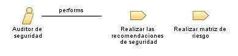

| Role: Auditor de seguridad |
| |
 |
| El rol de Auditor de Seguridad se encarga de evaluar y garantizar la integridad y confidencialidad de los sistemas de información en un proyecto de software. |
| Synonyms: Analista de Seguridad, Especialista en Auditoría de Seguridad, Experto en Seguridad de la Información, Auditor de Sistemas |
|
Relationships
 |
| Primary Performs |
|
| Modifies |
|
Main Description
| El Auditor de Seguridad es responsable de identificar y evaluar las vulnerabilidades y riesgos de seguridad en un proyecto
de software, así como de verificar que se cumplan los estándares y políticas de seguridad establecidos. Este rol se encarga
de realizar auditorías de seguridad, analizar los controles de seguridad implementados, proponer mejoras y asegurar que se
sigan las mejores prácticas de seguridad. |
Staffing
| Skills | Conocimiento en ciberseguridad, Experiencia en evaluar riesgos, Conocimientos tecnico en sistemas y redes, Analisis y
resolucion de problemas. |
| Assignment Approaches | Puede tener dos tipos de asignacion, puede ser interna como parte del equipo de desarrollo del proyecto, o puede ser
interna como una contratacion aparte para que lleve acabo las evaluaciones y auditorias necesarias. |
| Synonyms | Analista de Seguridad, Especialista en Auditoría de Seguridad, Experto en Seguridad de la Información, Auditor de Sistemas |
Key Considerations
| Conocimiento profundo en practicas de seguridad, Capacidad para evaluar y analizar riesgos, Habilidad para realizar
auditorias de seguridad, Comunicacion efectiva. |
|